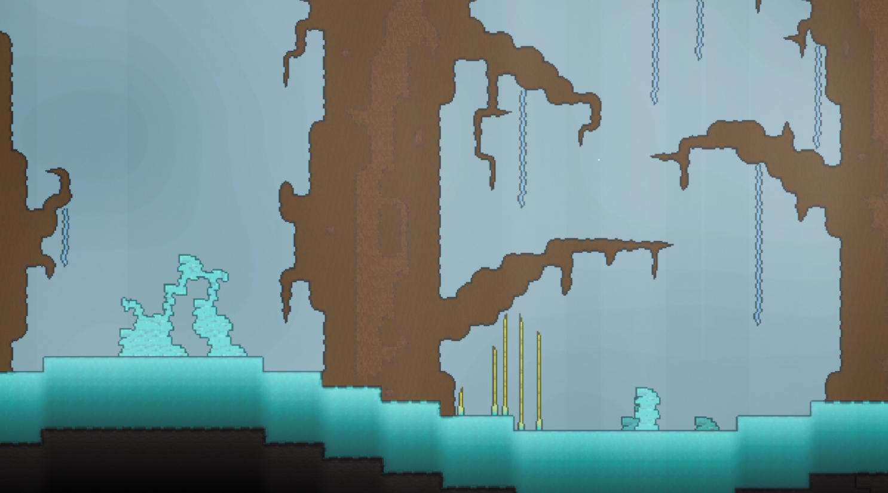
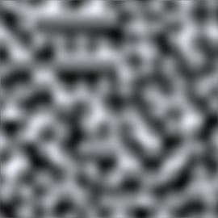

This system I feel shows my capability of turning complicated tasks into clean and simple APIs.
Very similar to other games like Minecraft and Terraria, I decided to create procedural world generation to create massive and unique worlds for players to explore for my game, Perastra. I first created this system a couple years ago, but just recently I have revamped the system to clean up the API to make future updates much simpler. I've encountered many different problems and solutions while creating this, but I think the most important part for this system specifically is how I was able to turn the complexity into a very readable and concise API.

public class OnimellowForest_WorldGen : WorldGen
{
static PerlinNoiseVertical1D WallCutoff = new(min: 0, max: 5, scale: 5);
static PerlinNoiseHorizontal1D SurfaceCutoff = new(min: 5, max: 20, scale: 40);
static PerlinNoise2D CaveCutout = new(min: 0, max: 1, xScale: 20, yScale: 10);
static StructurePlacer1D SurfaceForegroundStructures = new(placeEveryXChunks: 10, retryCount: 30,
structures: new StructureOption[] {
new(Structures.OnimellowTree, placeChance: 0.7f, leftPadding: 1, rightPadding: 1),
new(Structures.ClichMound, placeChance: 0.5f, leftPadding: 1, rightPadding: 1),
new(Structures.Climboo, placeChance: 0.5f, leftPadding: 1, rightPadding: 1)
});
static StructurePlacer1D BackgroundClichMound = new(placeEveryXChunks: 10,
structures: new StructureOption[] {
new(Structures.ClichMound, placeChance: .2f, leftPadding: 3, rightPadding: 3)
});
const int onimellowTreeYOffset = -3;
const int clichMoundYOffset = -4;
const int climbooYOffset = -3;
const int backgroundClichMoundYOffset = -7;
public override WorldGenOutput Run(in WorldGenContext ctx, WorldGenOutput output)
{
float wallCutoff = WallCutoff[ctx];
if (wallCutoff >= GetDistanceFromBiomeLeft(ctx) || wallCutoff >= GetDistanceFromBiomeRight(ctx))
return output.OutOfBounds();
float surfaceCutoff = SurfaceCutoff[ctx];
if (ctx.y > surfaceCutoff)
{
output.SetIds(ItemId.Air);
if (BackgroundClichMound.FindOverlappingStructure(ctx, out var mound))
{
mound.y = Mathf.FloorToInt(Mathf.Min(SurfaceCutoff[mound.x], SurfaceCutoff[mound.xMax])) + backgroundClichMoundYOffset;
output.Set(mound[ctx].SwapForegroundWithBackground());
}
if (SurfaceForegroundStructures.FindOverlappingStructure(ctx, out mound))
{
int yOffset =
mound.structure == Structures.OnimellowTree ? onimellowTreeYOffset :
mound.structure == Structures.ClichMound ? clichMoundYOffset :
climbooYOffset;
mound.y = Mathf.FloorToInt(Mathf.Min(SurfaceCutoff[mound.x], SurfaceCutoff[mound.xMax])) + yOffset;
output.Set(mound[ctx]);
}
return output;
}
if (ctx.y > surfaceCutoff - 5)
return output.SetIds(ItemId.Clich);
output.frontBlock = ItemId.Murk;
if (CaveCutout[ctx] > 0.7f)
output.frontBlock = ItemId.Air;
output.backBlock = ItemId.Murk;
return output;
}
}

The image is of the Onimellow Forest, and alien biome on the planet in Perastra. The code is the code that uses the world generation API that I created. To design a biome, you first need to edit the biome system (which I won't get into much here) so that the biome is placed how you want it, then you create one of these WorldGen classes as shown above. To use this system, you need to know two basic features of how the world generation works.